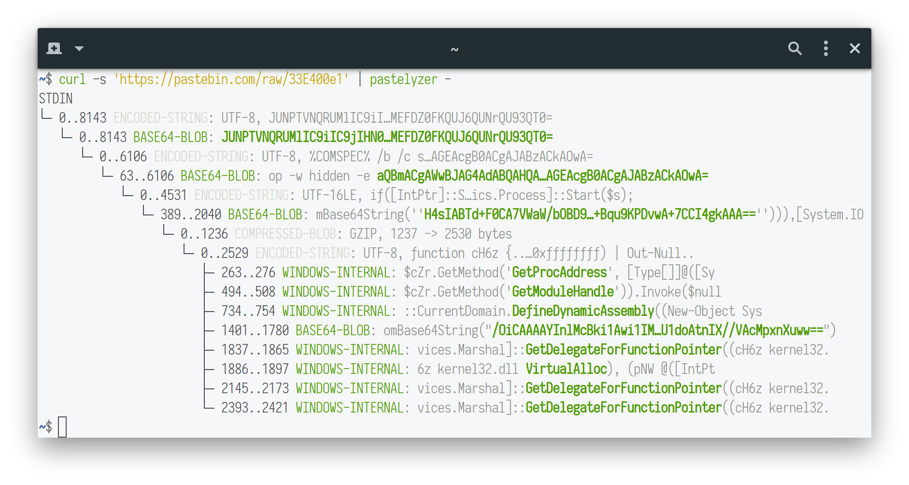

Pastelyzer
User manual
Table of Contents
1 Introduction
pastelyzer is a tool that analyses text documents and looks for security and
privacy related “items” (called artefacts in this document). A
distinguishing feature of the tool is that embedded binary content (e.g.,
base64-encoded) is detected and decoded. The decoded content is then
recursively processed (see section 4.1).
IMPORTANT: This software is a work-in-progress, and is expected to change.
Make sure you consult the documentation that corresponds to the version of
pastelyzer you’re using.
2 Running pastelyzer
pastelyzer can be run in two modes:
- interactively as an ordinary command-line utility, and
- as a background service with no user interaction.
Both of these modes are described in the following sections.
2.1 Interesting artefacts
In order to keep the amount of information presented to the user manageable
not all discovered artefacts are shown. For example not all groups of four
numbers separated with periods are IP addresses — more commonly than not the
numbers are actually version numbers. To make the IP address extraction
useful there is an option to only show the IP addresses that fall into
specific networks (see section --networks-file
option). In this case we say that the IP addresses that belong to the
specified networks are “interesting.” Similarly for top-level domains and
bank cards.
There are still some cases hard-coded in the system. The intention is to make the configuration facility flexible enough so that these can be removed from the code and into the configuration.
2.2 Common command-line options
The following options affect artefact extraction and apply in both CLI and standalone mode:
-h, --help- Show short usage information.
-v, --version- Show version.
--networks-file- Path to a file that contains networks (in
CIDR notation), one per
line. Empty lines and lines starting with a
#character are ignored. See https://nic.lv/local.net for an example of such a file. --[no-]resolve-damains- If
--resolve-domainsoption is present, domain names are resolved to IP addresses. If--no-resolve-domainsis present, domains are not resolved. If this option is not provided, domain resolution is automatically enabled if--networks-fileis provided and loaded. --tlds-file- Path to a file containing valid Top Level Domains (e.g.,
https://data.iana.org/TLD/tlds-alpha-by-domain.txt). Empty lines and lines
starting with
#character are ignored. Used to reduce the number of false positives. --interesting-tlds- A comma-separated list of TLDs that should be considered interesting. These
are used by comparing the domains from the end, so the period should be
included to compare the complete TLD. Example:
.abc,.xyz. --important-cc-bins- Path to a file containing important bank card BINs. The format of the file is described below.
2.2.1 Important bank card BINs file
Each line of the file can be one of the following:
- A comment line, starting with a
#character. There can be multiple consecutive comment lines. The last comment line preceding a BIN specification is used as a note for that BIN. - An empty line, clears the note.
- A BIN specification. The format is: digit characters followed by number placeholder characters. The number of digit and placeholder characters should match the number of bank card digits corresponding to the bin (e.g., 16 for Visa and Mastercard). Spaces are ignored (in both prefix and placeholder parts).
The following example file defines 5 bins for 2 banks. The first bank uses
16-digit numbers that start with 123456, 424242 and 111122. The second
bank uses 15-digit numbers that start with 23 and 32.
# This is just an example. # National bank 1234 56xx xxxx xxxx 424242 xx xxxx xxxx 111122xxxxxxxxxx # Other bank 23xx xxxxxx xxxxx 32xxxxxxxxxxxxx
2.3 Interactive mode
The simplest way to use pastelyzer is to pass it one or more file names.
pastelyzer will analyze given files and print all detected artefacts in a
tree structure (see figure below).

Figure 1: Sample CLI usage
Currently in this mode it is only possible to view what and where pastelyzer
can detect. In the future it will be possible to control what is extracted
(i.e., limit output to a subset of “interesting” artefact classes) and what to
do with the results (i.e,. write to a file, or generate JSON).
2.4 Standalone mode
In standalone mode pastelyzer receives documents from a feed1, stores
them in database and analyzes them. It is possible to control what to do with
the discovered artefacts using configuration. A sample
systemd service file is provided in
support/pastelyzer.service file.
2.4.1 Prerequisites
pastelyzer stores all received documents in a PostgreSQL (version 9.5 or
later) database. Database connection parameters are set using environment
variables (see section 2.4.3). At the moment schema
updates are managed by the application itself. This means that all tables
will be created automatically whenever pastelyzer is run in standalone mode.
2.4.2 Options
-c, --config- Path to configuration file (see section 3).
-w, --workers- Number of threads to use for document processing (default:
4). --server-port- Port number where to expose the built-in web server. If the port is not given then the web server is not started and it will not be possible to interact with the application using HTTP protocol.
--server-ext-host,--server-ext-port- Web server host and port to use when generating links to documents in
emails. If not specified, links of the form
http://localhost/...will be generated. --[no-]process-broken- Process pastes with broken UTF-8 content2 (in addition to trying to fix
them; defaults to yes). Specific sites can be blacklisted using an
environment variable (see
IGNORED_PASTESITES).
2.4.3 Environment variables
DB_NAME- Database name. Default:
pastelyzer. DB_USER- Database user. Default:
pastelyzer. DB_PASS- Database password. Default: empty.
DB_HOST- Database host. Default:
localhost. DB_PORT- Database port. Default:
5432. CIRCL_ZMQ_ADDRESS- Paste feed endpoint3. Default:
tcp://crf.circl.lu:5556. IGNORED_PASTESITES- Comma-separated list of paste sites to not re-fetch broken pastes from. It
is a good idea to have at least
pastebin.comin this list. HTTP_USER_AGENT- User agent to use when fetching web pages. This will be used verbatim as
the HTTP
User-Agentheader value.
2.4.4 Static web server files
The public directory in the source distribution is expected to be located in
the same directory where the pastelyzer binary is run from.
2.4.5 Submitting documents
If the web server is started (see --server-port
option) it is also possible to submit documents using HTTP POST requests. The
following POST parameters are expected:
data- Required. The document content.
source- Optional. String used to identify document source.
storeis used if not provided. This is used as the value forprovidercolumn in thepastestable. id- Optional. Identifier of the document. If not provided the file name from
the post data is used. This is used as the value for
provider_idcolumn in thepastestable.
Example:
curl 'http://localhost:8080/store' -F data=@/path/to/a/file
3 Configuration
Currently configuration file is used only when running in standalone mode. By default received documents are stored in the database, processed, and the summary of findings (what kind of artefacts and how many) also stored in the database. Sinks are additional destinations where artefacts can be collected, and filters are used to control what artefacts end up in which sinks.
Current sink and filter implementation is good enough to support basic use cases. The implementation is expected to change in the future to accommodate additional use cases.
3.1 Syntax overview
Configuration is written using S-expressions. The most unusual thing about this notation might be the prefix notation, but it can also be thought of as XML simplified (i.e., no need for closing tags). Please refer to Wikipedia page for a more verbose introduction.
Syntax used in pastelyzer configuration file have an extension: square
brackets can be used to specify byte-vectors. The elements between opening
and closing square brackets are expected to be space-separated hexadecimal
8-bit numbers (case-insensitive). Example: [7f 45 4c 46].
Currently there are two recognized configuration directives (described in
following sections): define-sink and define-artefact-filter. The word
define in both of them is there to let text editors that have support for
lisp-like languages recognize and treat these expressions specially (i.e., for
syntax highlighting and automatic indentation).
3.2 Sinks
define-sink directive is used to define a sink. The syntax is as follows:
(define-sink <name> (<parent>) <attribute>*)
<name> is the name of sink being defined and will be used to refer to it in
filters or as a parent in another sink.
<parent> should be either one of the built-in sink implementations
(described in the following sections), or another thing that has been defined
previously. Even though a sink can only have one parent it has to be
specified as a single-element list (i.e., it has to be surrounded by
parenthesis).
There can be zero or more <attribute> specifications of the following form:
(<name> <parameter>*)
Attribute <name> will usually be a keyword (i.e., a symbol starting with a
colon). Each sink implementation has a different set of supported attributes
described in corresponding section below.
3.2.1 Specifying values
Attribute values have types. This means that if a string value is required,
the value must be enclosed in double quotes (i.e., "this is a string").
Values can also be forms:
<string>- A string value stands for itself.
yes,true- A boolean true value.
no,false- A boolean false value.
(env <string>)- Returns the value of process environment variable named by given string.
(file-contents <string>)- Returns the contents of a file named by the given string.
(or <form>+)- Returns the first form from the given list that has a value. For example,
the form
(or (env "SOME_VAR" "undefined"))will return the value ofSOME_VARenvironment variable, or the string"undefined"if there is no such environment variable.
3.2.2 Templates
If an attribute is specified to be a template, the value of an attribute will be generated using forms provided in the attribute.
:nl- New line: outputs a newline character, unconditionally.
:fl- Fresh line: outputs a newline only if the last character was not a newline.
(extract <field>)- Extracts
fieldfrom the context variable. See sink and item field extractors below. (fmt <format-string> <form>+)- Formats given parameters using Common-lisp format function. For advanced users only.
(unique-count <artefact-class>)- Not really a filter function or an extractor, but can be used in sink
attribute templates to calculate the number unique artefacts
of the given
artefact-classin a document currently being processed. Note: this is a hack, and most probably will change once we come up with a more general way to access this information.
3.2.2.1 Sink (document) level field extractors:
source-url- Source site of the document being processed. E.g.,
pastebin.com. remote-url- The URL of the document being processed (if available).
remote-raw-url- The URL to the raw contents of the document being processed (if available).
local-url- The URL to the local copy of the document being processed. See
--server-ext-hostand--server-ext-portcommand line options. artefact-descriptions- Generates a summary of all artefacts collected in a sink, grouped by artefact class, one per line.
artefact-summary-by-class- Generates a comma-separated string with artefact class and the number of artefacts with this class collected in the sink.
3.2.2.2 Item (artefact) level field extractors:
digits- The digits of a bank card number with no separators.
note- Note associated with an artefact. For
important-card-numberit is the comment associated with the BIN. See--important-cc-binsoption.
3.2.3 WEB-SINK
This is the simplest sink. It does not have any parameters.
Example:
(define-sink dashboard (web-sink))
3.2.4 SMTP-SINK
This sink is used to send emails. Attributes:
(:server <string>)- Sets the outgoing SMTP server to the given string.
(:from <string>)- Sets the sender (“From” field) of the outgoing emails.
(:subject <form>+)- Template attribute to generate subject line of the outgoing email.
(:body <form>+)- Template attribute to generate the body of the outgoing email.
(:recipients <string>+)- A list of strings, each being an email address to send the email to.
3.2.5 MISP-SINK
(:server <string>)- Sets the MISP instance URL.
(:api-key <string>)- The API key to use when communicating with the instance.
(:ca-cert <string>)- Path to a custom CA certificate.
(:user-cert <string>)- Path to PEM-encoded user certificate.
(:user-key <string>)- Path to PEM encoded private key matching the certificate given in
:user-certattribute. (:user-key-pass <string>)- Passphrase to use to decrypt the private key specified with
:user-keyattribute. (:alert <boolean>)- Boolean value specifying whether this MISP event is or is not an alert.
(:publish <boolean>)- Boolean value specifying whether to automatically publish this event.
(:title <form>+)- Template attribute to generate the title of MISP event.
(:sharing-group <string>)- Currently the only sharing option is a sharing group. Given value should be the name of the sharing group to use (the ID will be automatically looked up using the API).
(:document-action <form>)- An action to perform once the MISP event is created. Currently the
following actions are supported:
(add-tags <string>+)- Tag the event with the given tags.
(add-attribute :category <string> :type <string> :value <string> :comment <string>)- Add an attribute to the event with the given
category,type,valueandcomment(optional). The subject of the action is sink (document).
(:item-action <form>)- An action to perform after the MISP event is created, and all document
actions are performed. Each item action is performed once for every
artefact collected in the sink. The only supported action is
add-attribute:(add-attribute :category <string> :type <string> :value <string> :comment <string>)- Add an attribute to the event with the given
category,type,valueandcomment(optional). The subject (context) of the action is an artefact.
3.3 Filters
define-artefact-filter directive is used to define a filter. The syntax is
as follows:
(define-artefact-filter <name> <filter-expression> <action>+)
<name> is the name of the filter. Generally unimportant, but useful for
debugging. Whenever an artefact is detected, <filter-expression> of every
filter is executed. If the result is true (i.e., the filter matches), all
<action> items are executed in order. Currently the only supported action
is to collect the artefact into a sink.
Actions have the following syntax: (collect-into <sink-name>).
Filter expressions have an implicit argument: an artefact. The following filter expressions are supported:
(type? <class>)- True if the artefact is of the given class (or any subclass). See section Artefact classes.
(exact-type? <class>)- Similar to
type?, but true only if the artefact is exactly of the given class. (and <filter-expression>+)- True if all enclosed filter expressions are true, false otherwise.
(or <filter-expression>+)- True if any of the enclosed filter expressions is true, false otherwise.
(not <filter-expression>)- False if the given filter expression is true, false otherwise.
(extract <field>)- Extract given field from the current context value, usually an artefact. Extractors applicable to particular artefacts are documented in the corresponding artefact class section.
(-> <filter-expression>+)Replaces the context of each consecutive filter expression with the value of the previous expression. Consider the following example:
(and (type? embedded-binary) (-> (extract embedded-binary-bytes) (or (starts-with? [4D 5A]) (starts-with? [7f 45 4c 46]))))The
andexpression has two enclosed filter expressions. For it to return true both of them have to be true. So if the class of the artefact is notEMBEDDED-BINARY, the value ofandwill be false (and the second form will not even be considered). But if the context of the filter is indeed anEMBEDDED-BINARYthen the value ofandwill be the value of second form:->.First it calls
(extract embedded-binary-bytes)(see below), and replaces the current context with returned value. The next form isor, and for this form the context is the binary bytes of the current artefact (which we know is anEMBEDDED-BINARY). The forms enclosed inorare executed in order; if any of them returns true the value of theorform is also true. In any case, the value of->form will be the value of theorform applied to the byte content of theEMBEDDED-BINARYartefact.(length)- Returns the length of current context value.
(= <number>)- True if the current context value is equal to the given number.
(< <number>)- True if the current context value is less than the given number.
(> <number>)- True if the current context value is greater than the given number.
(starts-with? <subsequence>)- True if the context value is a sequence that starts with the given subsequence.
(ends-with? <subsequence>)- True if the context value is a sequence that ends with the given subsequence.
(contains? <subsequence>)- True if the context value is a sequence that contains the given subsequence.
3.4 Example configuration
(define-sink dashboard (web-sink)) (define-artefact-filter web ;; Everything except playlist entries and PNG images. (not (or (type? m3u-entry) (and (type? embedded-binary) (-> (extract embedded-binary-bytes) (starts-with? [89 50 4E 47]))))) (collect-into dashboard)) (define-sink local-misp (misp-sink) (:server "https://127.0.0.1:5000/") (:api-key (env "MISP_API_KEY")) (:ca-cert (or (env "MISP_CA_CERT") "misp/ca.pem")) (:user-cert (or (env "MISP_USER_CERT") "misp/misp.crt.pem")) (:user-key (or (env "MISP_USER_KEY") "misp/misp.key.pem")) (:user-key-pass (env "MISP_USER_KEY_PASS"))) (define-sink misp-cc-event (local-misp) (:alert yes) (:publish yes) (:title (fmt "~@[~A: ~]~A probable card number~:P" (extract source-url) (unique-count important-card-number))) (:sharing-group "Finance") (:document-action (add-tags "CardFraud" "tlp:amber")) (:document-action (add-attribute :category "External analysis" :type "url" :value (extract source-url))) (:item-action (add-attribute :category "Financial fraud" :type "cc-number" :value (extract digits) :comment (extract note)))) (define-sink email (smtp-sink) (:server "smtp.your.org") (:from "pastelyzer@your.org") (:subject (extract artefact-summary-by-class)) (:body "URL: " (extract local-url) :fl "Origin: " (extract remote-url) :fl "Origin (raw): " (extract remote-raw-url) :fl (extract artefact-descriptions)) (:recipients "pastelyzer-notifications@your.org")) (define-artefact-filter important-cc (type? important-card-number) (collect-into misp-cc-event) (collect-into email))
4 Artefact classes
The list of artefact classes recognized by pastelyzer and their
relationships are shown below. These artefact
classes are described in the following sections.
ARTEFACT ├─ BINARY-ARTEFACT │ ├─ COMPRESSED-BLOB │ └─ ENCODED-STRING └─ STRING-ARTEFACT ├─ BANK-CARD-NUMBER │ └─ IMPORTANT-CARD-NUMBER ├─ CREDENTIAL ├─ DOMAIN │ └─ ONION ├─ EMAIL ├─ EMBEDDED-BINARY │ ├─ BASE64-BLOB │ ├─ HEX-BLOB │ └─ BINARY-BLOB ├─ IP-ADDRESS │ ├─ IP-SERVICE │ └─ RESOLVED-IP-ADDRESS ├─ M3U-ENTRY ├─ URI └─ WINDOWS-INTERNAL
4.1 Binary artefacts
BINARY-ARTEFACT is the superclass for artefacts that are represented as
binary data (i.e. sequence of 8-bit bytes). If the input data is not known to
be text then it is processed as binary data. In most cases this means that
the data will be detected as being text in UTF-8 encoding and processed as
text.
4.1.1 COMPRESSED-BLOB
Created if the BINARY-ARTEFACT bytes can be decompressed using gzip, zlib or
deflate methods.
4.1.2 ENCODED-STRING
Created if the BINARY-ARTEFACT bytes can be decoded as UTF-8 or UTF-16
(little- or big-endian) string.
4.2 String artefacts
STRING-ARTEFACT is the superclass of all artefacts represented as text
(i.e. most of them, described below).
4.2.1 BANK-CARD-NUMBER
pastelyzer currently recognizes bank card numbers that correspond to the
following patterns:
| Pattern | Description |
|---|---|
AXXXXXXXXXXXXZ |
14 consecutive digits |
AXXXXXXXXXXXXXZ |
15 consecutive digits |
AXXXXXXXXXXXXXXZ |
16 consecutive digits |
AXXX-XXXX-XXXX-XXXZ |
16 digits in groups of 4 |
AXXX-XXXXXX-XXXXZ |
15 digits in groups of 4-6-5 |
In the latter two cases the separator can be single or double space or dash. In all cases the first digit is expected to be non-zero, and the last digit is expected to be the checksum digit (according to Luhn algorithm).
These rules are very lax and are expected to generate false-positives. This is because the BINs change, and we want to avoid updating the software when they do. In the future we expect to allow specifying the BINs in an external file.
Applicable extractors:
digits- A string of all the bank card digits with separators removed.
4.2.2 IMPORTANT-CARD-NUMBER
Artefact class of bank card number whose BIN (prefix)
is listed in the important bank card BIN file (see
--important-cc-bins option).
Applicable extractors:
digits- Inherited from
BANK-CARD-NUMBER. note- Comment associated with the bin this artefact has been matched to. See section 2.2.1.
4.2.3 CREDENTIAL
An username/passphrase pair, separated by colon (:), semicolon (;),
vertical bar (|), comma (,) or tab character. At the moment regular
expressions are used to match both. Even though the character repertoire for
passphrases is quite generous, there are some limitations:
- Only credentials with emails (see
EMAIL) as usernames are detected. - Non-ASCII characters are not matched.
- Space (and tab) characters are not matched.
We plan to improve credential extraction to work around these limitations in the future.
4.2.4 DOMAIN
Everything that looks like words separated with periods, with some additional restrictions (documented in RFC1035) and other heuristics.
We strongly suggest to provide the valid TLD file (see the
--tlds-file option) to filter out most false
positives.
4.2.5 ONION
A pseudo-domain consisting of two parts separated by a period. The first part
being 16 or 56 alphanumeric characters (consistency not checked), the second
being onion (see Wikipedia entry).
4.2.6 EMAIL
Strings of the form username@domain are recognized as emails using a
simple regular expression. Only alphanumeric characters plus a period (.),
underscore (_), percent sign (%), plus (+) and minus (-) are
considered in the username part. Period-separated sequences of alphanumeric
characters are accepted as domain part.
4.2.7 EMBEDDED-BINARY
All embedded binary artefacts (currently BASE64-BLOB,
HEX-BLOB and BINARY-BLOB) are
specializations of this artefact class. The textual representation is
processed and resulting binary data is available as the BYTES field (see
section Filters).
The bytes are processed, and if it turns out they represent text or compressed
data, the corresponding BINARY-ARTEFACT instance is
created.
Applicable extractors:
embedded-binary-bytes- The bytes of the artefact after decoding. Note: this will most likely be
renamed to just
bytesin near future.
4.2.7.1 BASE64-BLOB
Base64-encoded (see Wikipedia)
sequence of bytes. Example: TVqQ.
4.2.7.2 HEX-BLOB
A sequence of hexadecimal digit pairs, each pair representing one 8-bit byte.
Example: 4D5A90.
This artefact is also created for sequences of bytes written using C-syntax
for hexadecimal numbers, separated by comma and optional white-space.
Example: 0x4d, 0x5a, 0x90.
4.2.7.3 BINARY-BLOB
Just ones and zeroes in groups of 8 (i.e., the total number of digits must be
a multiple of 8). Example: 010011010101101010010000.
4.2.8 IP-ADDRESS
Artefact class for IPv4 addresses. Only addresses that belong to one of the
“interesting networks” are considered “interesting” (see
--networks-file option).
4.2.9 IP-SERVICE
A specialization of IP-ADDRESS artefact class that is
created for IPv4 address:port combination (e.g., 1.2.3.4:8080).
4.2.10 RESOLVED-IP-ADDRESS
A specialization of IP-ADDRESS artefact class for IPv4
addresses that are obtained by resolving domain names using system resolver
(see DOMAIN).
4.2.11 M3U-ENTRY
Titles of playlist entries (lines starting with #EXTINF:).
4.2.12 URI
URIs matched using the syntax provided in RFC3986, appendix A.
4.2.13 WINDOWS-INTERNAL
One of the strings from the following table:
CreateProcess |
NtUnmapViewOfSection |
CreateRemoteThread |
NtWriteVirtualMemory |
DefineDynamicAssembly |
PointFunctionCall |
GetDelegateForFunctionPointer |
QueueUserAPC |
GetModuleHandle |
ResumeThread |
GetProcAddress |
SetThreadContext |
GetThreadContext |
VirtualAlloc |
NtAllocateVirtualMemory |
VirtualAllocEx |
NtCreateUserProcess |
WriteProcessMemory |
NtGetContextThread |